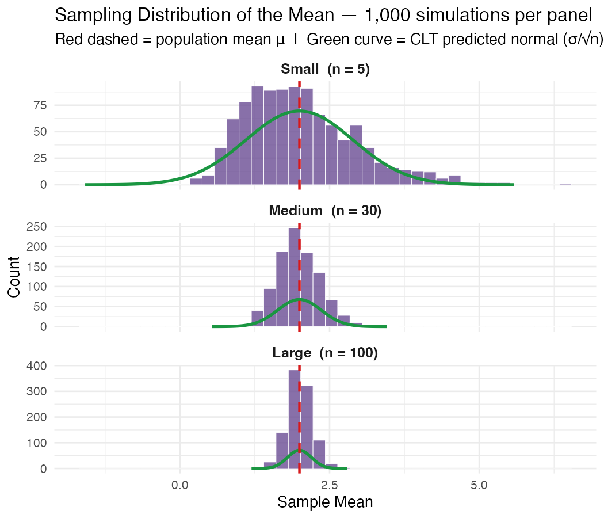

Summer Bootcamp — Gresham Lab, NYU Biology
Using statistics and code to understand biological systems. This site documents projects completed during the bootcamp, with a focus on reproducible analysis in R.
View my work ↓I am a Professor of Biology at NYU and principal investigator of the Gresham Lab, where we study how populations of cells adapt to environmental change using yeast as a model system. This bootcamp is giving me hands-on experience writing and sharing reproducible R code — moving from analysis scripts that live only on my laptop to documented, version-controlled notebooks that anyone can read and re-run.
My statistical background is strong, but translating that knowledge into clean, shareable code is a new discipline. The projects here represent that learning in progress.

An R Notebook simulating the Central Limit Theorem: 1,000 repeated samples drawn from a right-skewed population at three different sample sizes (n = 5, 30, 100), with the theoretical normal curve overlaid on each. Includes a written explanation of what is happening at each step.